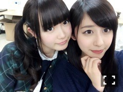

| 2014/12 13 Sat | 斎藤ちはる 素敵なアンダーライ ブ。(´>∀<｀)ゝ |
ちはるーむへようこそ\( ö )/
昨日は、アンダーライブを見に行ってきました( ¨̮ )( ¨̮ )( ¨̮ )！
なんというか、
本当素晴らしかった！！！本当に！
この言葉一言だけでまとめちゃいけないと思うし、
こんな私が言う言葉にはもったいない言葉なんだけど、
本当、素晴らしかったです。
こんなに、
泣いて、
笑って、
感動して、
勇気をもらえて、
元気がでて、、
こんなライブって他にはないんじゃないかって思えるくらい
素晴らしかったです。
overtureの後、みんなが出てきた瞬間
知らないうちに涙ができてて、
それがずっと止まらなくって、
ずっとタオルが欠かせませんでした。
目、腫れてたら恥ずかしいな〜( ´^` )
みんながそれぞれセンターで歌ってるのが、
可愛くて可愛くてしょうがなくて、
それぞれ自信を感じられてかっこよくて、
キラキラ輝いていました。
それを見てまた涙が出てきて...
ずっと一緒にやってきたアンダーメンバーだし、
前回まで一緒にアンダーライブのステージにも立ってて、
だからこそ思いが溢れ出てきたのかな( ´^` )。
始まる前や終わった後に
必ずメンバーが「ちーちゃん！」って言って抱きついてきます。
まあやは、言いました。
いつも隣にいるちーちゃんが今日はいなくて寂しいよ。。
ひなちまは、言いました。
やっぱりちーがいないと。。
愛未は、言いました。
ちーちゃん、どうだった？面白かった？
まひろは、言いました。
ちーちゃん、明日も頑張ろな！
さゆにゃんは、言いました。
ちーちゃん(´;_; `)
川後には、言いました。
まいまい、川後がMCの時いなくて聞いてなかったよ。
ひめたんは、何も言いませんでした。
泣きながら、抱きついてきました。
そういってくれるみんなが、
可愛くて、かっこよくて、
ほんとに大好きです。ほんとに。。
支えてくれて、ありがとう(´;_; `)。
今日、明日は生駒ちゃんがいないのは
寂しいし不安だけど、
ゆっくり休んでほしいです。
生駒がいない分、自分に出来ることを
精いっぱい頑張りたいと思います。
乃木坂46 大感謝祭2014も開催決定したので！
どんなものになるかは分からないけど、全力で頑張りたいと思いますので
都合が会う方是非\( ˆoˆ )/
よし、
今日、明日は全体でのライブ。
時間を共有できる会場の皆さん、
スカパー生中継で見てくださる皆さん、
残念ながら見ることのできない皆さん、
それぞれですが、
頑張りますので応援よろしくお願いします(﹡ˆ ˆ﹡)

ばいるんっ
るんるんっ
ちはるんっ
(´>∀<｀)ゝ